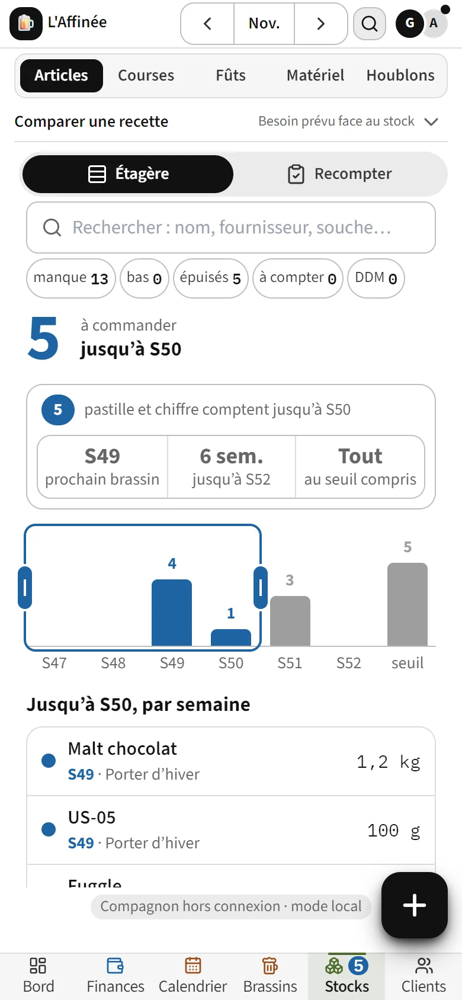
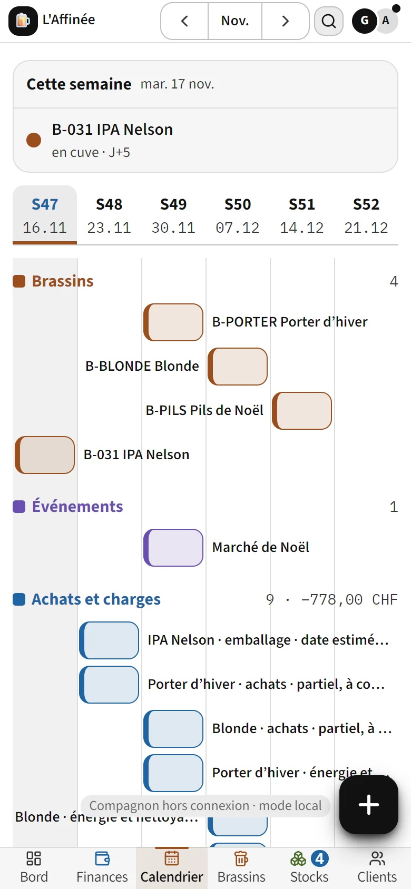
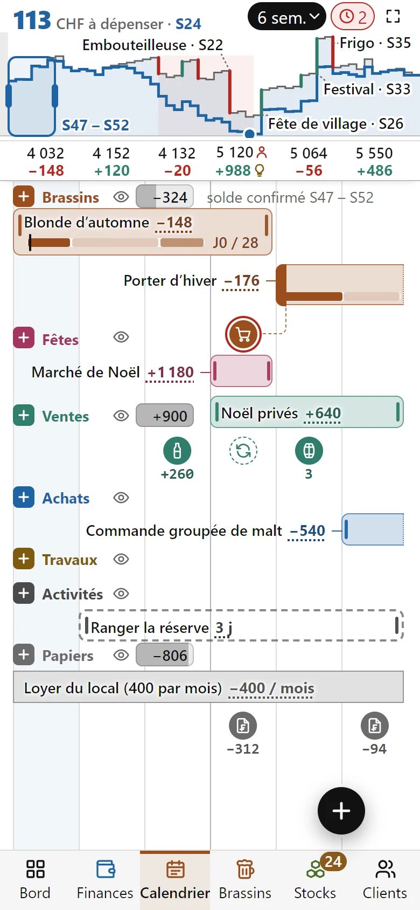
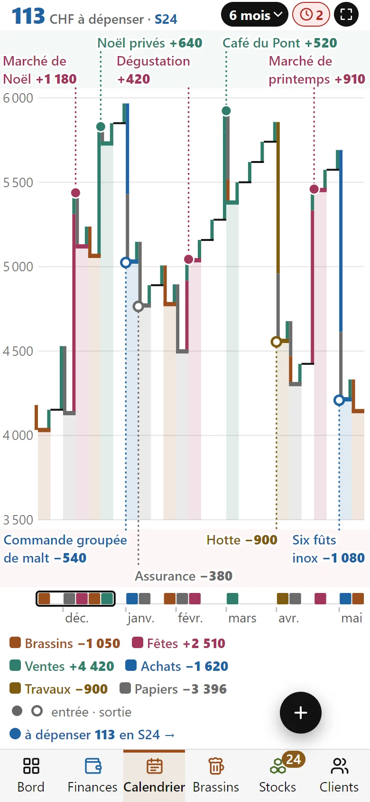
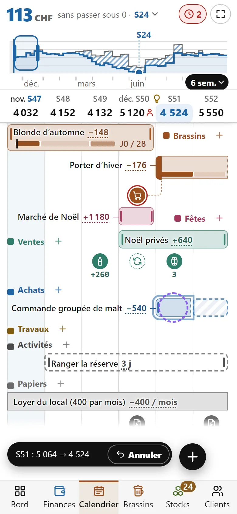
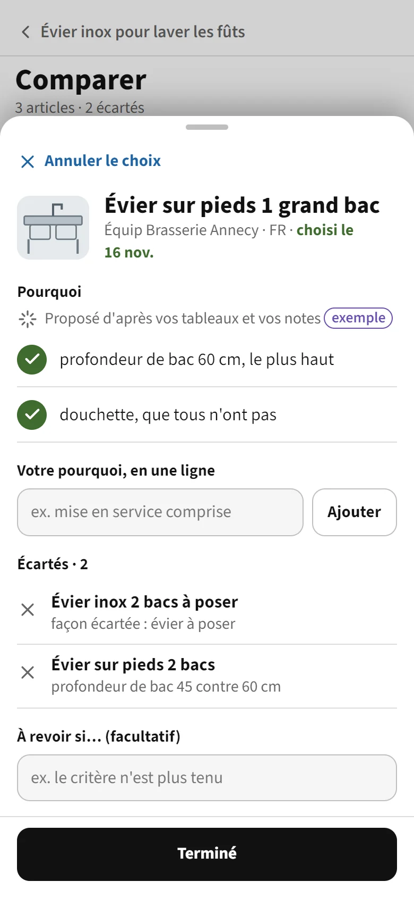
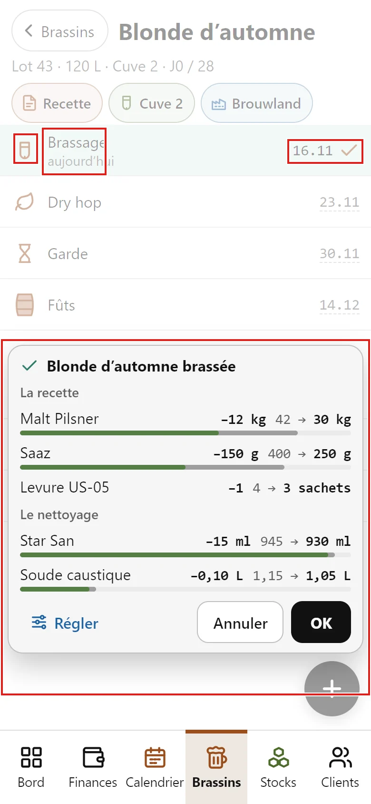

Nuit du 16 au 17.11. Ce qui est en ligne, ce que le critique a tranché pour toi, les accords à donner.

C tel quel. La fenêtre de l'histogramme se règle au doigt (poignées, « jusqu'à S50 »).

Le 6e onglet est là. Son corps n'est pas encore gi2/r2-c : l'assemblage vient après tes choix ci-dessous. « Cette semaine » est trop chargé.
Critique sur chaque port : 6 bloquants corrigés et revus. Build vert, aucun test nouveau en échec. Pas encore joué en ligne : les gestes qui écrivent (sur des « ZZ TEST »).

Juste quelle info et sa date. Critique : portrait s1 (s4 second), paysage t1 (t3 second).
Ouvrir la page
Courbe colorée par événement, frise en bande fine. Critique : g4b (g2b, g3b). Ses étiquettes gardent des montants : à alléger comme s1.
Ouvrir la page
Déplacer, allonger, poser, ouvrir, appui long, période. Critique : f1-b, f2-a, f3-a, f3-b, f4-b, f5-b, f6-b, c1-b, c2-b…
Ouvrir la page
Étape par étape, le meilleur des deux ; joué de zéro, critique corrigée.
Ouvrir la page
L9 b+c, L1 a+b, L4 a+b, L29 a, L14 a+b : notés, à porter après le calendrier.
Revoir la pageAussi : le jouable de tes cinq choix. Un point ouvert : unifier les numéros de lot (B-, L-, « lot 28 »).